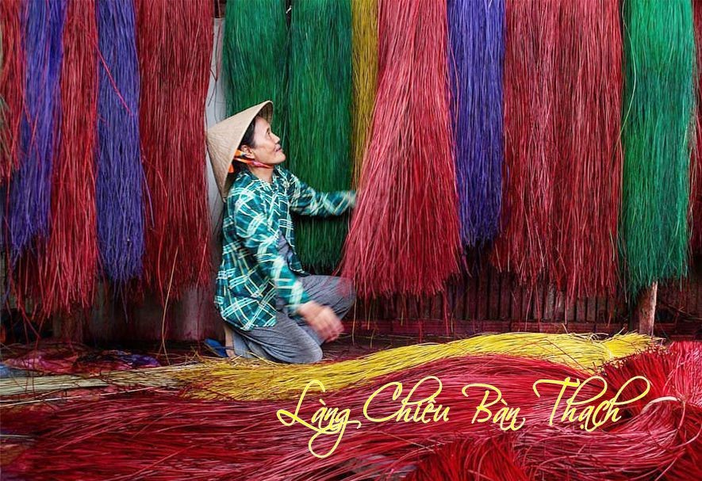
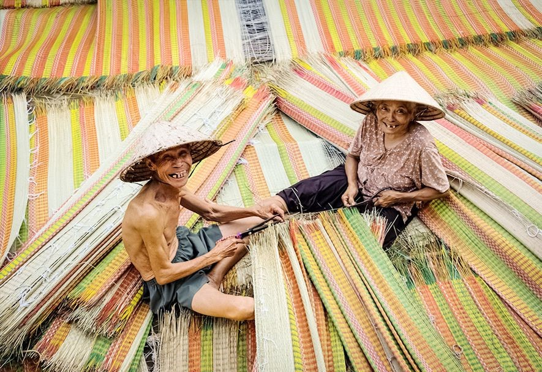
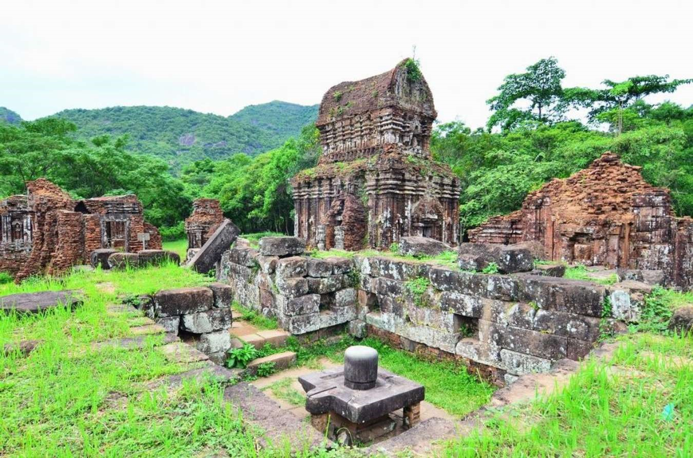
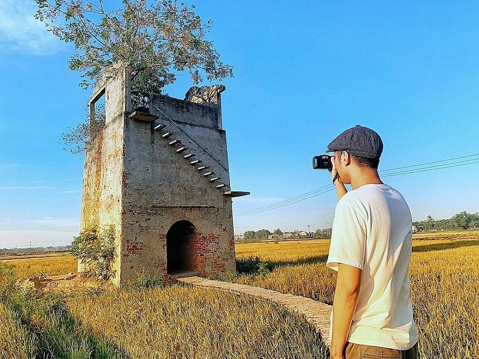
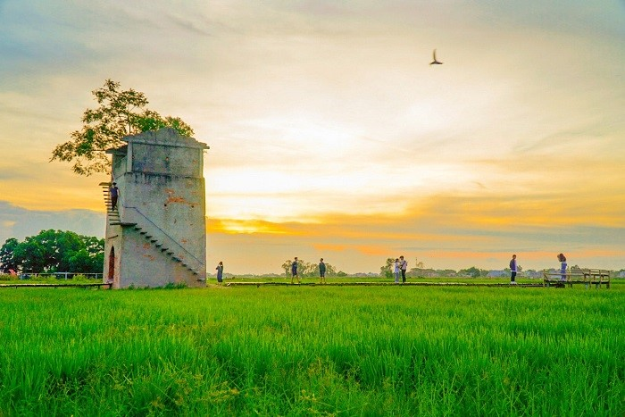
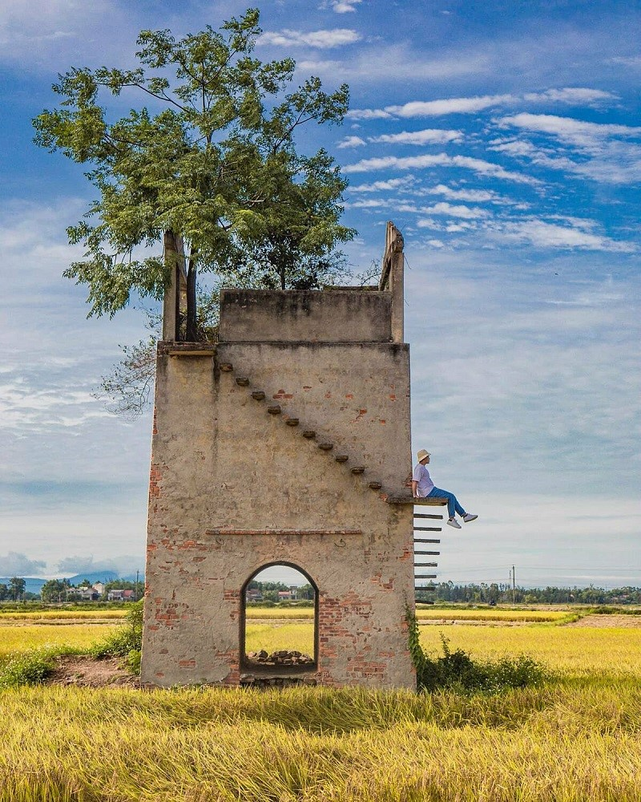
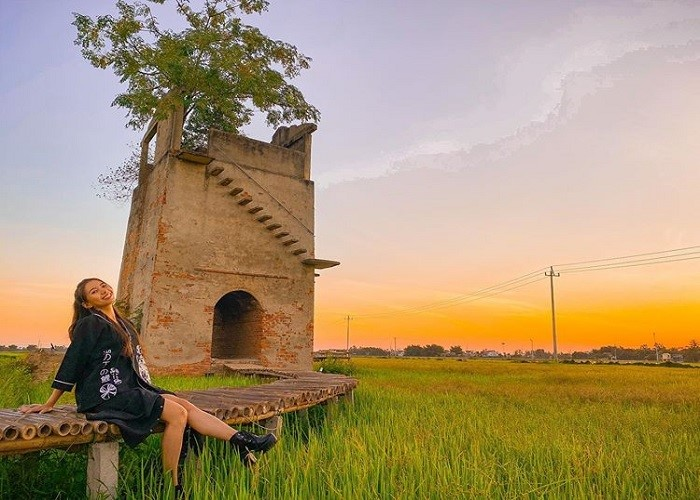
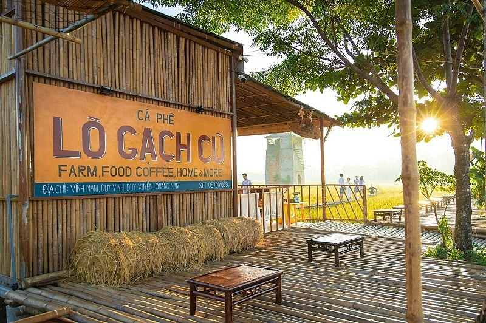

"Toàn dân bảo vệ an ninh Tổ Quốc -
Đại đoàn kết toàn dân"


"Toàn dân bảo vệ an ninh Tổ Quốc -
Đại đoàn kết toàn dân"
Làng chiếu cói Bàn Thạch là một làng nghề dệt chiếu bằng tay truyền thống ở Thôn Đông Bình, xã Duy Vinh, Duy Xuyên, Quảng Nam, được gìn giữ và lưu truyền đến nay đã 400 năm.Làng Chiếu Bàn Thạch Chiếu đã tạo ra những tấm chiếu dệt tay thủ công, nâng niu giấc ngủ bao thế hệ người Quảng, là sản phẩm kết tinh mồ hôi, tâm hồn của những thợ gửi gắm đến mọi miền đất nước.
Du lịch Quảng Nam, du khách không chỉ được tham gia các tour du lịch sinh thái biển như: tour du lịch Cù Lao Chàm, khám phá di sản văn hoá – Thánh Địa Mỹ Sơn hay tham quan phố cổ Hội An…Đặc biệt, du khách còn có cơ hội tham quan làng nghề chiếu cói thủ công truyền thống Bàn Thạch, để tìm hiểu về nguồn gốc và giá trị của các sản phẩm mà ông cha đã kỳ công gầy dựng, và duy trì cho đến ngày hôm nay.
Vào đầu thế kỉ 14, trong giai đoạn Trịnh, Nguyễn phân tranh, người dân ở các vùng từ Thanh Hoá, Thái Nguyên, Nghệ Tĩnh đã trèo đèo, vượt núi, di cư vào Nam, đến Quảng Nam, nhận thấy thiên thời địa lợi nhân hòa, nên dừng chân vùng đất này để xây dựng cơ nghiệp. Các bậc tiền nhân dần dần từng bước, đã khai hoá ruộng hoang và biến vùng đất bãi bồi ven sông thành những cánh đồng cói bằng chính tinh thần lao động cần cù, trí tuệ, sáng tạo.
Đến thế kỷ 17, nghề dệt chiếu ra đời, Làng dệt chiếu Bàn Thạch được hình thành từ đó. Ủy Ban Nhân Dân Quảng Nam đã công nhận đây là làng nghề truyền thống Chiếu Bàn Thạch và đưa làng nghề gắn liền du lịch để phát triển và vươn xa hơn.
Chiếu cói Bàn Thạch rất nổi tiếng từ bao đời, cho đến nay vẫn còn duy trì và phát triển. Chiếu Bàn Thạch được sản xuất ngày càng đa dạng về màu sắc và mẫu mã, cùng với sự khéo léo của những người thợ lành nghề đã tạo nên những hình ảnh sinh đọng trên chiếu như: Tháp Mỹ Sơn, chùa cầu Hội An, dệt cả chữ nổi trên chiếu….Được khách hàng khu du lịch cấp cao sữ dụng để trang trí trong phòng dành cho các du khách nước ngoài lưu trú.
• Tour tham quan làng chiếu
• Xem quy trình làm ra sản phẩm chiếu Bàn Thạch
• Được tham quan các bãi bồi trồng cói.
Đến chợ phiên Bản Thạch, du khách sẽ được chiêm ngưỡng những sản phẩm chiếu thủ công nhiều hoa văn và màu sắc sặc sỡ. Trên các tấm chiếu có nhuộm các chữ ý nghĩa như: Hỷ dành cho tình yêu….Ngoài ra du khách có thể mua thêm các sản phẩm tại chợ phiên Bàn Thạch về làm quà trong chuyến du lịch Quảng Nam của mình: túi cói, nón cói, giỏ cói, túi cói đi biển…
Mỹ Sơn - vùng đất sáng tạo, nơi thôi thúc và khởi phá những ý tưởng nghệ thuật mới mẻ và đọc đáo, là một trong những di sản văn hóa thế giới được UNESCO công nhận vào năm 1995.
Thánh địa Mỹ Sơn với hơn bảy mươi ngôi đền được chạm khắc tinh xảo, cầu kì mang nhiều dòng chữ quan trọng bằng tiếng Phạn và tiếng Chăm, nằm ẩn mình trong rừng giữa lòng thung lũng xung quanh được hai ngọn núi hùng vĩ che chở. Ấn tượng đặc biệt đó chính là phần gạch dùng để xây nên các tòa tháp cổ. Những viên gạch được nung và cắt khối, sau đó xếp chồng lên nhau một cách khéo léo, dù trải qua hơn một trăm năm nhưng vẫn còn rõ nét vào mang trong mình một nét đẹp cổ kính trang trọng.
Trong dòng chảy hun hút và bất tận của thời gian, nhưng tòa tháp cổ Mỹ Sơn luôn ngả bóng lên nhau, tác vào nhau và nân đỡ nhau để làm nên một quẩn thể độc đáo rất riêng, để hiện thị triết lí sinh tồn của mình, Mỹ Sơn gach đá nghìn năm, không chỉ đẹp mà còn bí ẩn, vô ngon mà ẩn chứa triệu triệu mỹ từ, thực mà rất lung linh huyền ảo.
Với Mỹ Sơn, trước Mỹ Sơn, với người này có thể là vọng cảm âm thầm, là sự chiêm bái thành kính trước tịch mịch huyền bí của ngôi đền thờ thần Ganesa. Nhưng với một ai khác, dấu ấn từ Mỹ Sơn có thể là từ sự bắt gặp tình cờ khoảnh khắc giao hòa ảo diệu khi ngày tan, cũng có thể là sự liên tưởng run rẩy giữa một quá khứ mờ xa tít tắp với hiện tại sống động cùng những dự cảm về một dặm dài mơ hồ phía trước.
Và có thể là cả một nỗi cô đơn, những suy tư của cổ tháp và của con người. Và trong mỗi giọt thời gian trôi, tháp lại hiện lên kiêu hãnh bằng những trầm tịch âm u, bằng những dấu rêu đẫm màu cổ tích giữa mênh mông cuộc đời, giữa những xưng tụng của thơ ca và âm nhạc.
Lò gạch cũ Hội An đang được giới trẻ tìm đến như một địa điểm “sống ảo” lý tưởng bởi nơi đây mang lại những khung hình đẹp xuất sắc với cảnh vật hài hòa. Bên cạnh đó, bạn còn có thể hòa mình vào thiên nhiên xanh mát.
Nếu bạn đã khám phá “sạch sành sanh” những điểm đến hấp dẫn tại khu phố cổ thì lò gạch cũ Hội An ngay gần phố Hội chính là địa điểm check-in cực chất cho team mê du lịch. Tới đây, bạn sẽ có cơ hội thả mình vào thiên nhiên trong lành cũng như sở hữu những tấm ảnh đẹp miễn chê.
Địa chỉ lò gạch cũ Hội An nằm tại thôn Vĩnh Nam, xã Duy Vinh, huyện Duy Xuyên, tỉnh Quảng Nam. Mặc dù đã bị bỏ hoang 20 năm nhưng địa danh này hiện đã được tu sửa lại với hình ảnh mới mẻ. Qua đó, bạn có thể tới tham quan, thỏa sức khám phá và trải nghiệm.
Bạn có thể đến lò gạch Hội An bất cứ khi nào bởi nơi đây không thuộc quyền sở hữu của bất cứ ai. Đồng thời, giá vé hoàn toàn miễn phí cho tất cả du khách. Tuy nhiên, quán cà phê ngay gần đó thường mở cửa vào 4h30 đến 22h00 mỗi ngày. Tại đây, bạn có thể gọi nước ngọt, cà phê, nước ép để nhâm nhi, hóng mát, ngắm cảnh từ xa.
Lò gạch cũ Cẩm Kim Hội An nằm giữa đồng lúa, sừng sững như một cổng thành. Nơi đây có những mảng tường bong tróc lộ ra lớp gạch đỏ au mang lại hình ảnh rêu phong cổ kính, kết hợp với các bậc thang nối tiếp nhau từ chân lên tới đỉnh càng tạo nên sự độc đáo. Hơn hết, đây chính là một trong những địa điểm check-in Hội An được giới trẻ đặc biệt yêu thích. Nếu có dịp, bạn cũng nên cân nhắc ghé thăm và tự mình trải nghiệm nhé.
Lò gạch cũ Hội An cách phố cổ Hội An khoảng 5km nên có nhiều phương tiện cho bạn lựa chọn. Điển hình như sau:
• Đi bằng taxi: Nếu bạn chưa biết lò gạch cũ Hội An ở đâu thì có thể di chuyển bằng taxi. Chỉ cần nói địa điểm chính xác, tài xế sẽ đưa bạn đến nơi trong thời gian ngắn nhất. Tuy nhiên, bạn cần chủ động về tài chính bởi giá dịch vụ này khá cao.
• Đi bằng xe máy: Đường đến lò gạch cũ Cẩm Kim Hội An đi bằng xe máy cũng rất thuận tiện. Bạn có thể tự mình di chuyển trên con đường làng yên bình. Chi phí cho việc thuê xe cũng hợp lý, phù hợp với nhu cầu của du khách.
Ngoài ra, bạn nên tham khảo kinh nghiệm du lịch Hội An để chủ động hơn. Theo đó, các thông tin hữu ích về thời gian, cách di chuyển, nơi ở, vui chơi đã được cập nhật đầy đủ. Điều này sẽ giúp ích cho bạn rất nhiều và chủ động hơn trong chuyến du lịch.
Muốn có những bức hình check-in lò gạch thủ công siêu đỉnh, bạn phải nắm chắc nhiều bí quyết. Điển hình như việc bạn nên chọn thời gian lý tưởng để nắm bắt khoảnh khắc đẹp. Một gợi ý nhỏ dành cho bạn là nên chụp ảnh khi bình minh, nắng lên cao hoặc hoàng hôn sẽ rất tuyệt vời.
Bên cạnh đó, lò gạch cũ Hội An có những bậc thang phủ rêu nên rất dễ trơn trượt. Vì thế, mỗi khi di chuyển bạn phải đặc biệt cẩn thận, đi chậm và nhẹ nhàng. Nếu nhận thấy dấu hiệu của sự nứt vỡ, bạn nên tránh xa khu vực đó ngay.
Ngoài ra, bạn có thể tham khảo thêm các địa điểm du lịch Hội An khác. Những nơi này không chỉ sở hữu cảnh sắc đẹp mà còn có nền ẩm thực phong phú. Từ đó, giúp chuyến đi của bạn thêm trọn vẹn, ý nghĩa và khó quên.
Cafe lò gạch cũ Hội An nằm tại Duy Xuyên, Quảng Nam được làm theo kiểu nhà sàn. Những chiếc bàn ghế bằng tre xếp ngay ngắn, thẳng hàng. Từ đây, bạn dễ dàng nhìn ra lò gạch đón ánh nắng bình minh, ngắm nhìn chiếc cầu tre dài, uốn lượn.
Quán cà phê lò gạch cũ có đồ uống làm từ rau, củ, quả và gạo đen. Điều đặc biệt hơn cả là chúng có tên gọi chỉ cần nghe qua cũng khiến bạn bật cười, ví dụ như sữa Thị Nở, cà phê Chí Phèo, sinh tố Làng Vũ Đại.